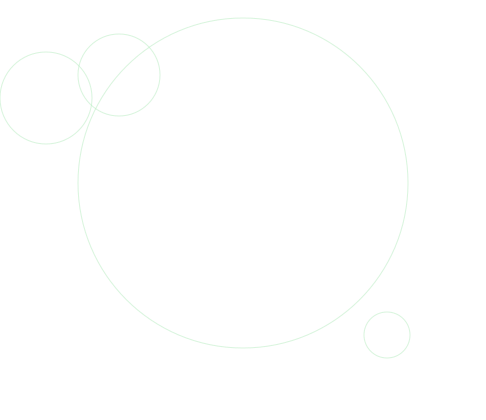

想いを聴く
まだ形になっていない「やってみたい」も、まずは聴かせてください。
YOKOHAMA × KAMAKURA / COMMUNITY LAB
HamaKura Labは、横浜・鎌倉で
人・企業・地域をつなぎ、
「やってみたい」を形にする場です。
正式ホームページ準備中の一時案内ページです

人・企業・地域が
自然に交わる場所
ABOUT HamaKura Lab
地域で動く人がいる。地域と関わりたい企業もいる。けれど、自然につながる仕組みは、まだ多くありません。
HamaKura Labは、個人・企業・地域が出会い、相談し、一緒に企画を育てていくための地域共助プラットフォームです。
CONCEPT
つながるだけで終わらせず、顔の見える関係性を、継続する仕組みとして育てていきます。
まだ形になっていない「やってみたい」も、まずは聴かせてください。
人・企業・地域の接点から、ひとりでは見つけにくい次の一手を探します。
一過性の交流で終わらせず、小さな協力が循環する活動へつなげます。
FOR YOU
HamaKura Labでは、関わり方に合わせて参加の入口をご用意しています。

企業・店舗の方
地域とつながりたい、PRしたい、場所や強みを活かしたい企業・店舗へ。

活動家・個人事業主の方
地域で仕事を広げたい、活動の仲間や協業相手を見つけたい方へ。

地域で挑戦したい方
地域で輪を広げたい、何かを始めたい、みんなで面白くしたい方へ。
NEXT ACTIONS
HamaKura Labは、皆さんと一緒に研究・探求しながら活動を進めます。
今は、はじまり。やりたいことを聴き、形にする環境を一緒に考えます。
顔の見える出会いから、継続する関係を育てます。
地域の課題や強みを、新しい価値へつなげます。
FAQ
現在確認できている内容をもとにした、叩き台のFAQです。
企業・店舗、活動家・個人事業主、フリーランス、地域で何かに挑戦したい方など、横浜・鎌倉で地域と関わりたい方を想定しています。
「まだ形になっていなくても大歓迎」と案内されています。まずは、やってみたいことをDMで相談してください。
InstagramのDMから、企業・店舗の方は「クルー参加希望」、その他の方は「参加希望」と送ってください。詳細をご案内します。
この叩き台では未掲載です。現在の条件や開催情報は、InstagramのDMからご確認ください。
START FROM YOUR TOWN
HamaKura Labは、横浜・鎌倉から、人と企業が自然に交わる土台をつくります。
Instagramで相談する